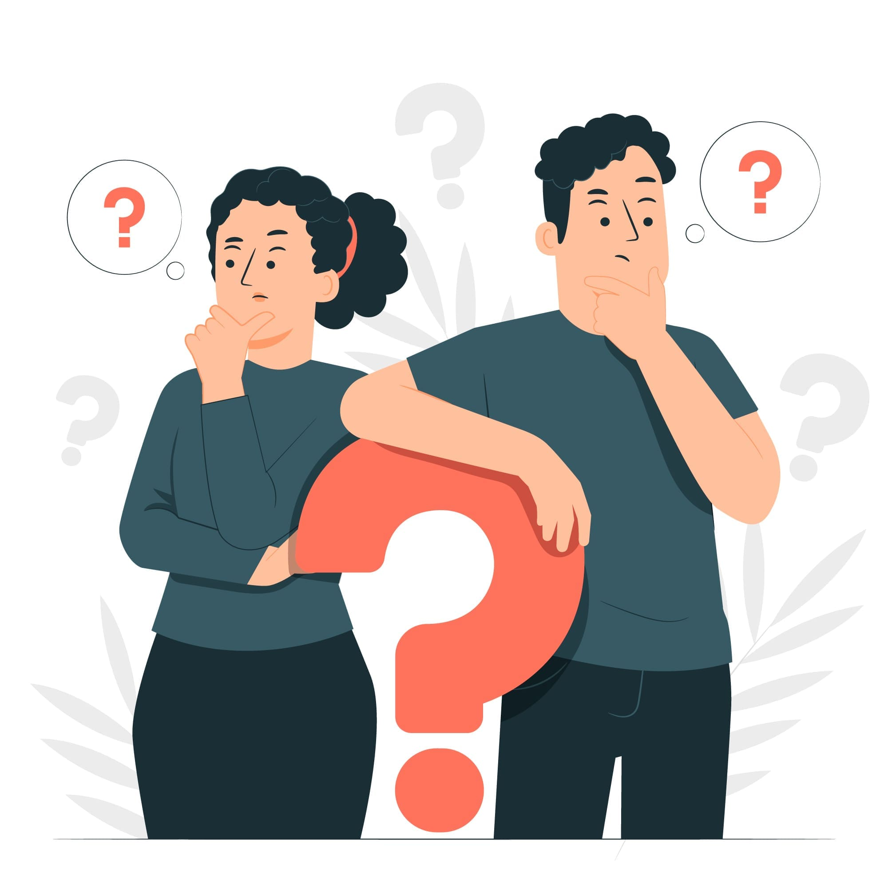

What is the CSRD?
- The CSRD, or Corporate Sustainability Reporting Directive, is a European regulatory framework for sustainability reporting.
- It replaces the Non-Financial Reporting Directive (NFRD) and aims to improve transparency regarding environmental, social and governance (ESG) factors in corporate reporting.
- The CSRD seeks to align with the European Green Deal and achieve carbon neutrality by 2050.


Which companies fall under the CSRD?
- The CSRD applies to all large companies governed by EU law or established in an EU member state.
- Specific criteria include having €40 million in net turnover, €20 million on the balance sheet, or 250 or more employees.
- It also extends to non-European companies with significant operations or subsidiaries in Europe.
When do I have to comply with the new CSRD?
- Large companies already subject to the NFRD must comply with the CSRD from January 1, 2024.
- For companies not previously under the NFRD, compliance begins on January 1, 2025.
- The CSRD measuring and reporting requirements become obligatory in annual reports in the respective financial years..

What should I report under the CSRD?
- Companies will report detailed sustainability information based on CSRD Sustainability Reporting Standards.
- Reporting covers various aspects, including climate impacts (TCFD & GHG Protocol), environmental impact categories (EU Taxonomy) and social considerations.
- Compliance involves providing a holistic view of a company's sustainability efforts and their alignment with European sustainability goals.